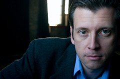
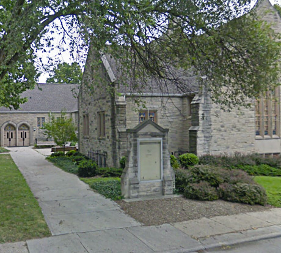

People
Each year the conference is molded in large part around the people who graciously give of their time, experience, and expertise to speak, facilitate discussions, and provide opportunities for design, creativity, and hands-on projects.
This year we are blessed to have some amazing people who are living out (in various and creative ways) what this whole conference is about.
Our Keynote Speaker this year is Joe Boyd. Joe graduated from Cincinnati Christian University and spent several years leading a successful youth adult church in Las Vegas before pursuing a career in the entertainment industry. A student of comedy improv, Joe went on to act in live stage shows, commercials and soap operas while writing his own screenplays. Years later he returned to vocational ministry as the teaching pastor of The Vineyard in Cincinnati. Aside from teaching, Joe also runs Rebel Pilgrim Productions, which has produced several feature length films. The films have received strong reviews and notable awards within the Indie film scene. Joe is currently wrapping up his latest film called "A Strange Kind of Happy" starring Christian recording artist, Rebecca St. James, and Academy Award-winning actress, Shirley Jones. Joe also published his first fiction novel "Between Two Kingdoms" and has blogged for nearly 10 years.
- Tim Streett - Jireh Sports
- Michael Kaufmann - Asthmatic Kitty Records / The Kinetic Project.
- Rob Pallikan - Outreach Inc.
- Shelley Landis - Rebuild the Wall, Inc.
- Elizabeth Roney - Liz Alig Fair Trade Fashion
- Bethany Showalter - Exodus
- Andy Chen - Stutz Art Space
- Maybeth Jackson - The Viewfinder Project
Place
We are also grateful and excited to be partnering with Trinity Church for this conference. They are an incredible community of believers who understand and practice what it means to live the Gospel in way that is simple and raw and real. They are all about equipping, encouraging, and empowering their people to translate the reality of Christ into whatever setting they find themselves. Find out more at indytrinity.org.
